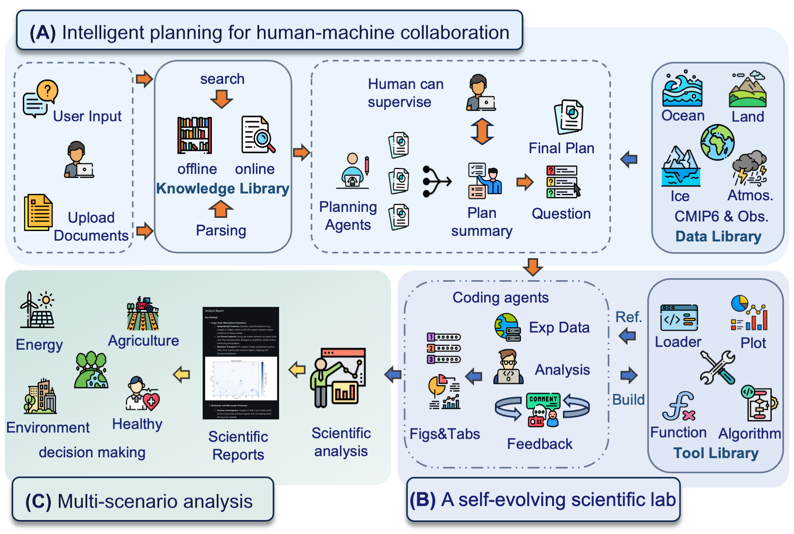
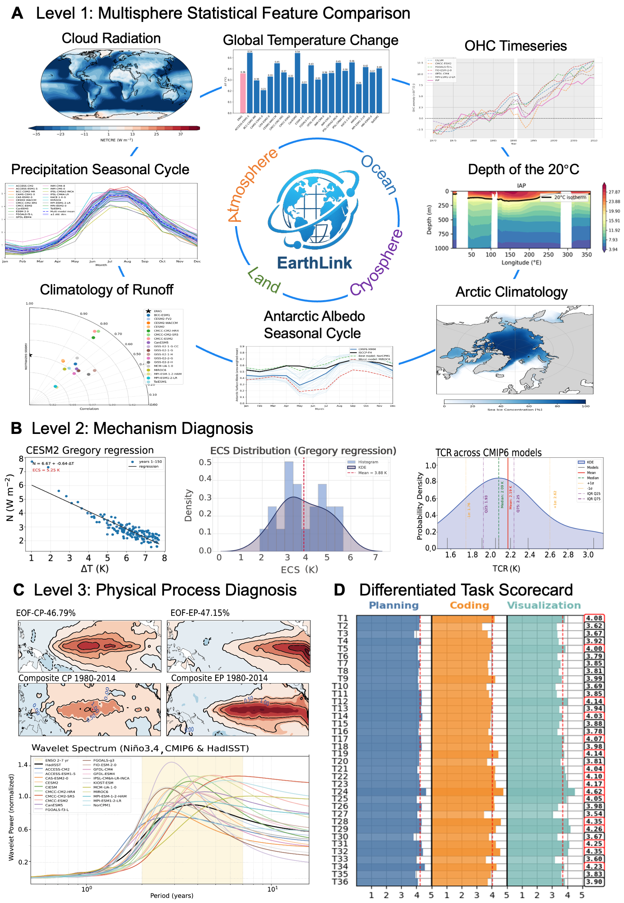
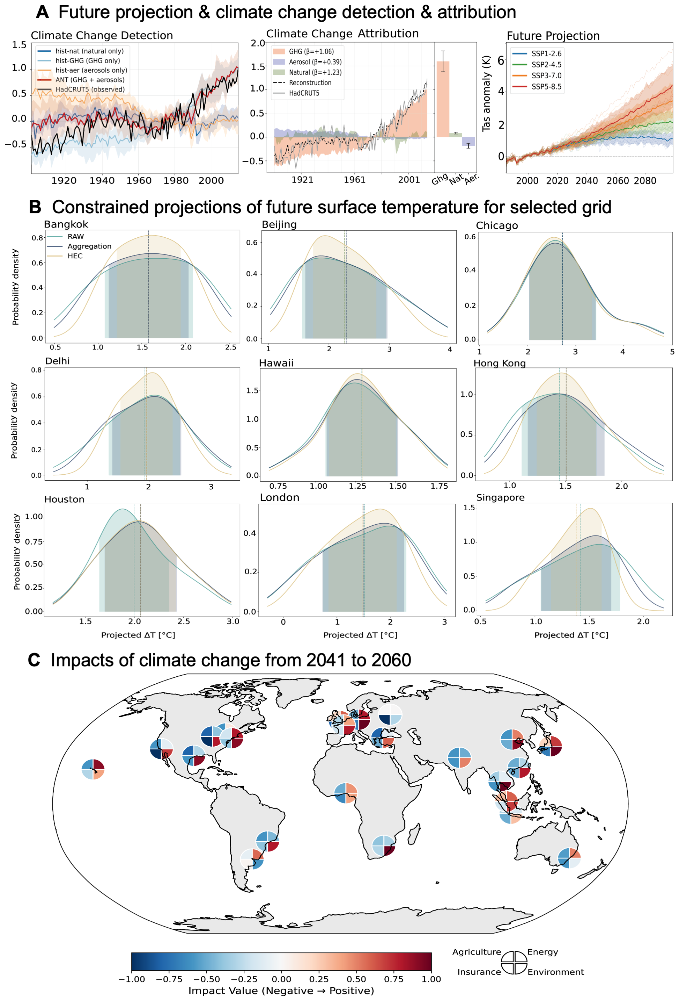

Modern Earth science is at an inflection point. The vast, fragmented, and complex nature of Earth system data, coupled with increasingly sophisticated analytical demands, creates a significant bottleneck for rapid scientific discovery. Here we introduce EarthLink, the first AI agent designed as an interactive copilot for Earth scientists. It automates the end-to-end research workflow, from planning and code generation to multi-scenario analysis. Unlike static diagnostic tools, EarthLink can learn from user interaction, continuously refining its capabilities through a dynamic feedback loop. We validated its performance on core scientific tasks of climate change, ranging from model-observation comparisons to the diagnosis of complex phenomena. In a multi-expert evaluation, EarthLink produced scientifically sound analyses and demonstrated an analytical competency that was rated as comparable to specific aspects of a human junior researcher's workflow. Additionally, its transparent, auditable workflows and natural language interface empower scientists to shift from laborious manual execution to strategic oversight and hypothesis generation. EarthLink marks a pivotal step towards an efficient, trustworthy, and collaborative paradigm for Earth research in an era of accelerating global change. The system is accessible at our website https://earthlink.intern-ai.org.cn.

The EarthLink platform workflow for automated climate data analysis. (A) Intelligent planning for human–machine collaboration. Users upload scientific queries or documents that are parsed to extract relevant concepts and goals. Planning agents generate candidate analysis workflows using resources from the Knowledge Library, which compiles published literature and expert knowledge. These plans are iteratively reviewed and refined, with human oversight encouraged to ensure scientific accuracy and task alignment. (B) A self-evolving scientific laboratory. The selected experimental plan is transformed into executable code, which autonomously handles data retrieval from the Data Library (including CMIP6 simulations and multi-domain observations), preprocessing, scientific analysis, and visualization. Algorithms from the Tool Library are dynamically composed, and the system applies an autonomous feedback loop for error correction and output refinement, with successful scripts contributing back to the Knowledge and Tool Libraries. (C) Multi-scenario analysis and synthesis. The final step involves transforming computational outputs and visualizations into structured, human-readable reports. This process provides scientific interpretations across various domains, including energy, agriculture, environment, and insurance, while delivering insights relevant to policy-making.

Multi-level evaluation of EarthLink on a number of core climate analysis tasks. (A) Level 1: Multisphere statistical feature comparison. EarthLink conducts diagnostic analyses across domains by comparing the CMIP6 simulation of climatological features, such as spatial patterns and variabilities with observations. Examples include seasonal cycles of precipitation, cloud radiative effects, global temperature change, ocean heat content (OHC) timeseries, Arctic mean climatology, 20°C isotherm depth, Antarctic surface albedo, and runoff patterns. (B) Level 2: Mechanistic diagnosis. EarthLink estimates scenario-driven metrics such as equilibrium climate sensitivity (ECS) and transient climate response (TCR), demonstrating its ability to extract relevant datasets and implement standard diagnostic methods. (C) Level 3: Physical process diagnosis. The platform performs advanced analyses such as ENSO diversity classification and period detection, displaying emergent capacity in physical reasoning and chain-of-thought synthesis. (D) Differentiated task scorecard. The system’s performance across evaluation tasks is summarized, highlighting relative strengths in planning, coding, and visualization. Note that most of the image elements in (A-C) are directly produced by EarthLink, and the others are only slightly adjusted in layout.

Application of EarthLink to tackle open-ended and future-oriented climate research challenges. (A) Climate change detection, attribution, and future projection. EarthLink processes multimodel CMIP6 simulations under various experiments, accurately distinguishing between the effects of natural and anthropogenic forcings and generating global temperature anomaly timeseries. (B) Constrained projections of future surface temperature for selected regions. Using hierarchical emergent constraints (HEC) and spatial aggregation approaches, EarthLink reduces projection uncertainty for city-level temperatures under the SSP2-4.5 scenario (2041–2060), demonstrating autonomous code synthesis and the selection of literature-based methods. (C) Impacts of climate change over the next 20 years. The system connects quantified climate projections to sectoral impacts, providing preliminary risk assessments and qualitative narratives for agriculture, energy, insurance and environment, illustrating its ability to bridge scientific data with policy-relevant discussion. Note that most of the image elements in (A-B) are directly produced by EarthLink, and the others are only slightly adjusted in layout.